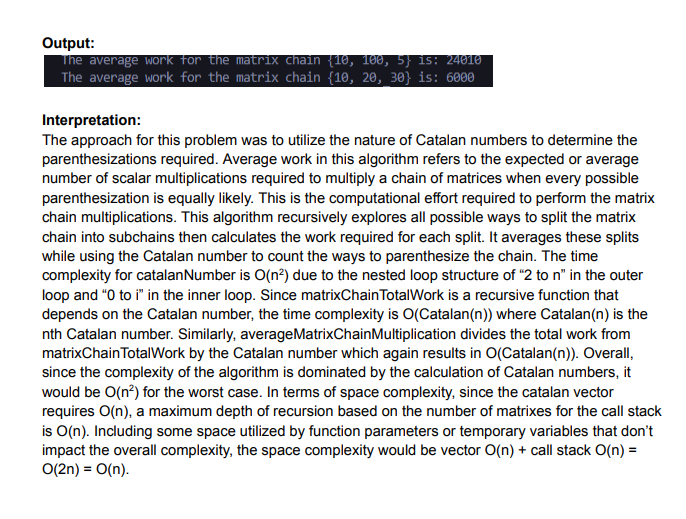

Matrix Chain Multiplication (C++)

Technologies: C++, Recursion, Catalan Numbers
Description: Calculates the average scalar multiplication work needed to multiply a matrix chain using recursive breakdown and Catalan numbers. This project combines mathematical rigor with recursive implementation techniques.
Challenges: Modeling the problem using recursion while dividing all valid parenthesizations, and integrating Catalan number calculation with runtime output for accuracy.
View on GitHub